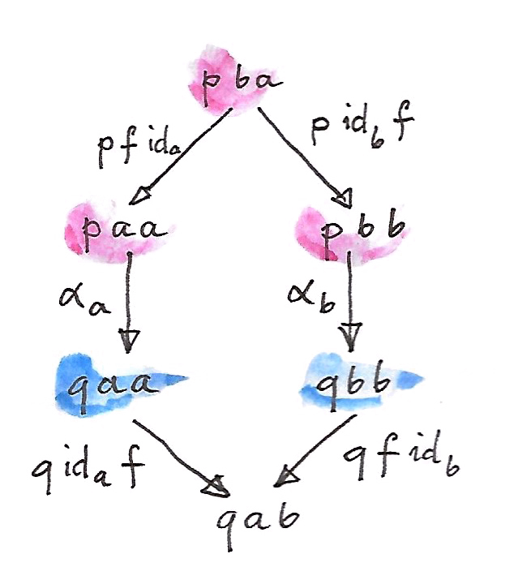
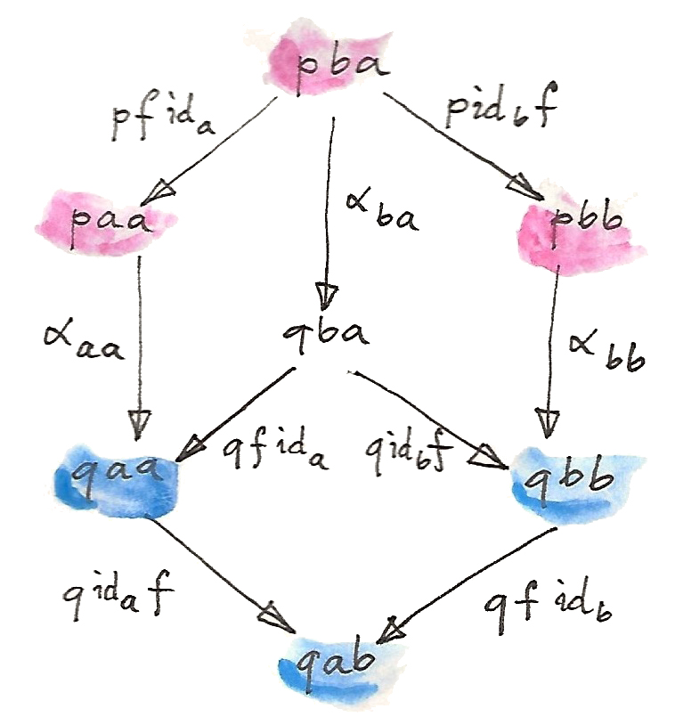
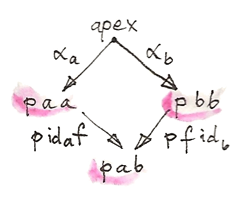
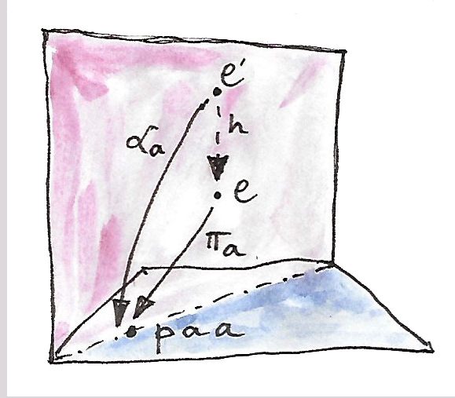
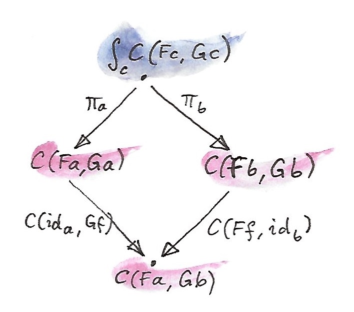

我们可以给范畴中的态射附加许多直觉，但有一点大家都能同意：如果从对象 a 到对象 b 存在态射，那么这两个对象就以某种方式“相关”。从某种意义上说，态射就是这种关系的证明。这一点在任何偏序集范畴中都很明显，因为那里的态射就是关系。一般来说，同两个对象之间的同一关系可能有许多份“证明”。这些证明构成一个集合，我们称之为 Hom 集（hom-set）。改变两个对象，就得到一个把对象对映射到“证明”集合的映射。这个映射具有函子性：在第一个参数上逆变，在第二个参数上协变。可以把它看成在范畴对象之间建立了一种全局关系。这个关系由 Hom 函子描述：
一般而言，任何这样的函子都可解释为在一个范畴的对象之间建立关系。关系也可以涉及两个不同范畴 C 与 D。描述这种关系的函子具有下面的签名，称为 Profunctor：
数学家称它为“从 C 到 D 的 Profunctor”（注意方向发生了反转），并用带斜杠的箭头表示：
可以把 Profunctor 想成 C 的对象与 D 的对象之间的证明相关关系（proof-relevant relation），集合中的元素象征这种关系的证明。每当 p a b 为空，a 与 b 之间就没有关系。别忘了，关系不必是对称的。
另一个有用的直觉，是推广“自函子是容器”的想法。于是，p a b 类型的 Profunctor 值可以看成一个装着 b、并以 a 类型元素为键的容器。特别地，Hom Profunctor 的一个元素就是从 a 到 b 的函数。
在 Haskell 中，Profunctor 被定义成一个双参数类型构造器 p，配有名为 dimap 的方法。它提升一对函数，其中第一个朝“错误的”方向：
class Profunctor p where
dimap :: (c -> a) -> (b -> d) -> p a b -> p c dProfunctor 的函子性告诉我们：如果已经证明 a 与 b 相关，那么只要存在从 c 到 a 的态射和从 b 到 d 的另一个态射，就能得到 c 与 d 相关的证明。也可以把第一个函数看成把新键翻译为旧键，把第二个函数看成修改容器内容。
对于作用于同一范畴内的 Profunctor，可以从 p a a 类型的对角元素中提取出很多信息。只要有一对态射 b→a 与 a→c，就能证明 b 与 c 相关。更进一步，只用一个态射也能抵达非对角值。例如，若有态射 f:a→b，可以提升二元组 ⟨f,idb⟩，从 p b b 到 p a b：
dimap f id pbb :: p a b或者提升二元组 ⟨ida,f⟩，从 p a a 到 p a b：
dimap id f paa :: p a b双自然变换
由于 Profunctor 是函子，可以按标准方式定义它们之间的自然变换。不过在许多情况下，只定义两个 Profunctor 的对角元素之间的映射就够了。只要这种变换满足反映“两种从对角元素连接到非对角元素的方式”的交换条件，它就叫作双自然变换（dinatural transformation）。函子范畴 [Cop×C,Set] 中两个 Profunctor p 与 q 之间的双自然变换，是一族态射：
并且对任意 f:a→b，下图交换：

注意，这严格弱于自然性条件。如果 α 是 [Cop×C,Set] 中的自然变换，上图可以由两个自然性方块和一条函子性条件（Profunctor q 保持复合）构造出来：

注意，[Cop×C,Set] 中自然变换 α 的分量由一对对象作为索引，即 αab。另一方面，双自然变换只由一个对象索引，因为它只映射相应 Profunctor 的对角元素。
Ends
现在，我们准备从范畴论的“代数”迈向可以视为“微积分”的东西。End（以及 Coend）的微积分借用了传统微积分的思想，甚至借用了部分记号。特别是，Coend 可以理解为无限和或积分，而 End 类似于无限乘积。这里甚至还有某种类似 Dirac δ 函数的东西。
End 是极限的推广，其中函子被 Profunctor 取代。这里不再有锥，而有楔（wedge）。楔的底由 Profunctor p 的对角元素构成；楔顶是一个对象（这里是集合，因为我们考虑 Set 值 Profunctor）；楔边是一族从楔顶映射到底部各集合的函数。可以把这一族函数看成一个多态函数——一个返回类型多态的函数：
与锥不同，楔内部没有连接底部各顶点的函数。不过如前所见，给定 C 中任意态射 f:a→b，可以把 p a a 与 p b b 都连接到公共集合 p a b。所以要求下图交换：

这称为楔条件（wedge condition），可以写成：
或者用 Haskell 记法：
dimap id f . alpha = dimap f id . alpha现在可以继续进行泛构造，把 p 的 End 定义为泛楔（universal wedge）：一个集合 e 与一族函数 π，使得对任意其他楔——楔顶 e′、函数族 α——都存在唯一函数 h:e′→e，让所有三角形交换：

End 的符号是积分号，“积分变量”放在下标位置：
π 的分量称为 End 的投影映射：
注意，如果 C 是离散范畴（除恒等态射外没有其他态射），End 就只是 p 在整个范畴 C 中所有对角项的全局乘积。稍后会看到，更一般的情况下，End 与这个乘积通过等化子发生联系。
在 Haskell 中，End 公式直接翻译为全称量词：
forall a. p a a严格说来，这只是 p 所有对角元素的乘积；但由于参数性（parametricity），楔条件会自动满足。对任意函数 f:a→b，楔条件写作：
dimap f id . pi = dimap id f . pi或者加上类型标注：
dimap f idb . pib = dimap ida f . pia等式两边的类型都是：
Profunctor p => (forall c. p c c) -> p a b而 pi 是多态投影：
pi :: Profunctor p => forall c. (forall a. p a a) -> p c c
pi e = e这里，类型推断会自动选择 e 的正确分量。
正如可以把锥的整组交换条件表达为一个自然变换，也可以把所有楔条件汇总成一个双自然变换。为此需要把常函子 Δc 推广为常 Profunctor：它把所有对象对映射到同一个对象 c，把所有态射对映射到这个对象的恒等态射。楔就是从该函子到 Profunctor p 的双自然变换。确实，一旦意识到 Δc 把所有态射都提升为同一个恒等函数，双自然性六边形就缩成了楔形菱形。
End 也可以在 Set 以外的目标范畴中定义，但这里仅考虑 Set 值 Profunctor 及其 End。
作为等化子的 End
End 定义中的交换条件可以用等化子表达。先定义两个函数（这里使用 Haskell 记法，因为数学记法似乎没那么友好）。这两个函数对应楔条件中汇聚的两条分支：
lambda :: Profunctor p => p a a -> (a -> b) -> p a b
lambda paa f = dimap id f paa
rho :: Profunctor p => p b b -> (a -> b) -> p a b
rho pbb f = dimap f id pbb两个函数都把 Profunctor p 的对角元素映射为下面类型的多态函数：
type ProdP p = forall a b. (a -> b) -> p a b它们的类型不同。不过，如果形成一个汇集 p 所有对角元素的巨大乘积类型，就能统一它们的类型：
newtype DiaProd p = DiaProd (forall a. p a a)lambda 与 rho 从这个乘积类型诱导出两个映射：
lambdaP :: Profunctor p => DiaProd p -> ProdP p
lambdaP (DiaProd paa) = lambda paa
rhoP :: Profunctor p => DiaProd p -> ProdP p
rhoP (DiaProd paa) = rho paap 的 End 就是这两个函数的等化子。回忆一下，等化子选出使两个函数相等的最大子集。在这里，它从所有对角元素的乘积中选出那些楔图交换的元素。
作为 End 的自然变换
End 最重要的例子是自然变换的集合。两个函子 F 与 G 之间的自然变换，是从形如 C(Fa,Ga) 的 Hom 集中挑选的一族态射。如果没有自然性条件，自然变换的集合就只是所有这些 Hom 集的乘积。事实上，在 Haskell 中它就是：
forall a. f a -> g a它在 Haskell 中有效，是因为自然性可由参数性推出。不过在 Haskell 之外，穿过这些 Hom 集的对角截面并不都会产生自然变换。但请注意，映射：
是一个 Profunctor，所以研究它的 End 是有意义的。下面是楔条件：

从集合 ∫cC(Fc,Gc) 中任取一个元素。两个投影把它映射为某个特定变换的两个分量，称为：
τb:Fb→Gb
在左边分支，用 Hom 函子提升态射对 ⟨ida,Gf⟩。你也许还记得，这种提升实现为同时进行前复合与后复合。作用在 τa 上时，提升后的态射对给出：
图的另一条分支给出：
楔条件要求二者相等，而这正是 τ 的自然性条件。
Coends
不出所料，End 的对偶称为 Coend。它由楔的对偶——余楔（cowedge，读作 co-wedge，而不是 cow-edge）——构造而来。
Coend 的符号是把“积分变量”放在上标位置的积分号：
正如 End 与乘积相关，Coend 与余积或求和相关（从这个角度看，它类似积分——求和的极限）。这里不再有投影，而是从 Profunctor 的对角元素向下进入 Coend 的注入。如果没有余楔条件，可以说 Profunctor p 的 Coend 要么是 p a a，要么是 p b b，要么是 p c c，等等；或者说，存在某个 a，使 Coend 正好是集合 p a a。定义 End 时使用的全称量词，在 Coend 中变成存在量词。
所以，用伪 Haskell 可以把 Coend 定义为：
exists a. p a aHaskell 编码存在量词的标准方式，是使用带全称量化的数据构造器。因此可以定义：
data Coend p = forall a. Coend (p a a)背后的逻辑是：无论选择哪个 a，都应该可以用类型族 p a a 中任意一种类型的值构造 Coend。
正如 End 可以用等化子定义，Coend 可以用余等化子（coequalizer）描述。所有余楔条件都可汇总为一个巨大的余积：对所有可能的函数 b→a，把全部 p a b 求和。在 Haskell 中，这表达为存在类型：
data SumP p = forall a b. SumP (b -> a) (p a b)有两种方式可以求值这个和类型：使用 dimap 提升函数，并把它应用到 Profunctor p：
lambda, rho :: Profunctor p => SumP p -> DiagSum p
lambda (SumP f pab) = DiagSum (dimap f id pab)
rho (SumP f pab) = DiagSum (dimap id f pab)其中 DiagSum 是 p 的对角元素之和：
data DiagSum p = forall a. DiagSum (p a a)这两个函数的余等化子就是 Coend。余等化子从 DiagSum p 出发，把对同一个参数分别应用 lambda 与 rho 所得的值等同起来。这里的参数由一个函数 b→a 与 p a b 的一个元素组成。应用 lambda 与 rho 会产生两个可能不同的 DiagSum p 值。在 Coend 中，这两个值被等同，于是余楔条件自动满足。
在集合中等同相关元素的过程，正式名称是取商（taking a quotient）。定义商需要一个等价关系（equivalence relation） ~，也就是满足自反、对称和传递的关系：
若 a~b，则 b~a
若 a~b 且 b~c，则 a~c
这样的关系会把集合划分为等价类。每个类由彼此相关的元素组成。每个等价类选一个代表，就形成商集。经典例子是把有理数定义为整数对，其中第二个整数非零，并使用下面的等价关系：
很容易验证这是等价关系。二元组 (a,b) 被解释为分数 a/b，分子与分母含有公约数的分数会被等同。一个有理数就是这类分数的一个等价类。
你也许还记得，在讨论极限与余极限时，我们说 Hom 函子是连续的，也就是它保持极限。对偶地，逆变 Hom 函子把余极限变成极限。这些性质可以推广到 End 与 Coend——它们分别是极限与余极限的推广。特别地，可以得到一个把 Coend 转换为 End 的非常有用的恒等式：
用伪 Haskell 看看它：
(exists x. p x x) -> c ≅ forall x. p x x -> c它告诉我们，接受存在类型的函数等价于多态函数。这完全合理，因为这样的函数必须准备好处理可能被编码进存在类型的任意一种类型。这与“接受和类型的函数必须实现为 case 分支，并为和中的每个类型提供一个处理器”是同一个原理。在这里，和类型被 Coend 替代，一族处理器则变成 End，也就是多态函数。
Ninja Yoneda 引理
Yoneda 引理中出现的自然变换集合可以用 End 编码，得到下面的表述：
还有一个对偶公式：
这个恒等式非常像 Dirac δ 函数的公式（函数 δ(a-z)，更准确地说是一个分布，它在 a=z 处有无限高的尖峰）。这里 Hom 函子扮演 δ 函数的角色。
这两个恒等式合称 Ninja Yoneda 引理（Ninja Yoneda lemma）。
为证明第二个公式，要使用 Yoneda 嵌入的推论：两个对象同构，当且仅当它们的 Hom 函子同构。换言之，a≅b 当且仅当存在下面类型、并且本身为同构的自然变换：
先把想证明的恒等式左侧放进一个去往任意对象 c 的 Hom 函子：
利用连续性论证，可以把 Coend 换成 End：
现在利用乘积与指数之间的伴随：
用 Yoneda 引理“执行积分”，得到：
（注意，这里用了 Yoneda 引理的逆变版本，因为函子 cFz 在 z 上逆变。）这个指数对象同构于 Hom 集：
最后利用 Yoneda 嵌入，得到同构：
Profunctor 复合
进一步探索“Profunctor 描述一种关系”的想法——更准确地说，是证明相关关系，即集合 p a b 表示 a 与 b 相关的证明集合。如果有两个关系 p 与 q，就可以尝试复合它们。若存在中间对象 c，使 q b c 与 p c a 都非空，就说通过“q 复合在 p 之后”，a 与 b 相关。这个新关系的证明，是两个单独关系之证明的所有配对。因此，把存在量词对应于 Coend、两个集合的笛卡尔积对应于“证明对”，就能用下面的公式定义 Profunctor 复合：
下面是 Data.Profunctor.Composition 中经过重命名的等价 Haskell 定义：
data Procompose q p a b where
Procompose :: q a c -> p c b -> Procompose q p a b这里使用了广义代数数据类型（generalized algebraic data type, GADT）语法，其中自由类型变量（这里是 c）会自动被存在量化。因此，未柯里化的数据构造器 Procompose 等价于：
exists c. (q a c, p c b)如此定义的复合，其单位就是 Hom 函子——这直接来自 Ninja Yoneda 引理。因此可以合理地问：是否存在一个以 Profunctor 为态射的范畴？答案是肯定的，不过有一点需要注意：Profunctor 复合的结合律与恒等律都只在自然同构意义下成立。这种定律在同构意义下有效的范畴称为双范畴（bicategory），它比 2-范畴更一般。于是得到双范畴 Prof：对象是范畴，态射是 Profunctor，态射之间的态射（又称 2-胞，two-cell）是自然变换。事实上还能更进一步，因为除了 Profunctor，范畴之间还有普通函子可作态射。拥有两种态射的范畴称为双重范畴（double category）。
Profunctor 在 Haskell 的 lens 库与 arrow 库中扮演重要角色。